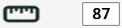
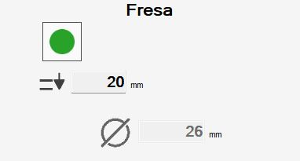

Mit diesem Panel kann der Bediener einige Eigenschaften eines Schnitts ändern.

Schaltflächen
Oben links kann der Aktivierungsstatus des Schnitts geändert werden.
 | Schnitt aktivieren/deaktivieren |
Je nach Typ des ausgewählten Schnitts werden unterschiedliche Versionen dieses Panels angezeigt.
Scheibenschnitte
Bei Auswahl eines linearen oder bogenförmigen Scheibenschnitts wird das folgende Panel angezeigt:

Scheibenschnitte sind durch einen Start- und einen Endpunkt gekennzeichnet. Die Pfeile definieren die Bewegungsrichtung vom Start zum Ende.

In der folgenden Tabelle sind die Schaltflächen aufgeführt, mit denen der Bediener die Schnitteigenschaften ändern kann:
 | Schnittrichtung umkehren |
 | Verlängerungsbetrag |
 | Scheibenrest berechnen |
 | Schnitt verlängern |
 | Schnitt verkürzen |
 | Startende bis zum Plattenrand verlängern |
 | Endende bis zum Plattenrand verlängern |
 | Kurze Schnitte verlängern |
Zusätzlich werden einige Daten zur Ausführung des Schnitts angezeigt.
 | Eintauchen |
 | Geschwindigkeit in Prozent |
 | Neigung |
Schnitt im Arbeitsbereich ändern
Wenn ein Schnitt im Arbeitsbereich ausgewählt und die rechte Maustaste gedrückt wird, erscheint ein Fenster zum schnellen Ändern des Schnitts.

Die Schaltflächen entsprechen den bereits aufgeführten Funktionen. Das dem Klickpunkt nächstgelegene Schnittende wird verlängert.
Schnitte an inneren Bögen
Bei Schnitten an Bögen, deren Krümmung zum Inneren des Werkstücks zeigt, muss berücksichtigt werden, dass der Scheibenrest während der Bearbeitung die Seite beschädigen kann.
Aus diesem Grund müssen diese Schnitte anders als Schnitte an äußeren Bögen ausgeführt werden.

Parametrix bietet zwei Modi zum Schneiden innerer Bögen, die über die Schaltfläche oben rechts ausgewählt werden können.
 | Geneigter Bogen |
 | Versetzter Bogen |
Standardmäßig empfiehlt Parametrix, diese Schnitte im Modus „Geneigter Bogen“ zu bearbeiten.
Wenn dies nicht gewünscht ist, muss der Ausführungsmodus jedes einzelnen Schnitts geändert werden.
Jeder Bearbeitungsmodus hat Vor- und Nachteile:
Geneigte Bögen ermöglichen eine bessere Oberflächenqualität des Endergebnisses, sodass weniger manuelle Nacharbeit erforderlich ist.
Sie beanspruchen die Maschine jedoch stärker; daher muss die Bearbeitung mit reduzierter Geschwindigkeit und mehreren Bahnen ausgeführt werden.Versetzte Bögen belasten die Maschine bei der Bearbeitung weniger und können daher mit höheren Geschwindigkeiten ausgeführt werden.
Dafür verursacht der Scheibenrest größere Schäden am Material, und bei der manuellen Nachbearbeitung muss mehr Material entfernt werden.
Bohrungen und Fräsbearbeitungen
Bei Bearbeitungen wie Bohrungen und Fräsbearbeitungen stehen dem Bediener weniger Änderungsmöglichkeiten zur Verfügung.

Folgende Informationen sind verfügbar:
 | Eintauchen |
 | Werkzeugdurchmesser |
Absenkungen und Eckbohrungen
Eckbohrungen und Absenkungen sind Bearbeitungen, die jeweils aus mehreren Bohrungen bzw. Fräsbearbeitungen bestehen. Wird einer dieser Einträge ausgewählt, wird eine Liste aller zugehörigen Schnitte angezeigt.

Der Bediener kann jeden Schnitt einzeln über die Schaltfläche an jedem Listeneintrag aktivieren oder deaktivieren oder über die obere Schaltfläche gleichzeitig auf alle Schnitte der Bearbeitung einwirken.
Mit den Schaltflächen unter der Liste kann die Reihenfolge geändert werden, in der die einzelnen Schnitte ausgeführt werden.
 | Verschieben mit Pfeilen |
 | Verschieben an die gewünschte Position |
Außerdem kann der Bediener die Eindringtiefe der Bearbeitung über das folgende Feld ändern:
| Eintauchen |